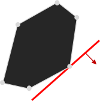
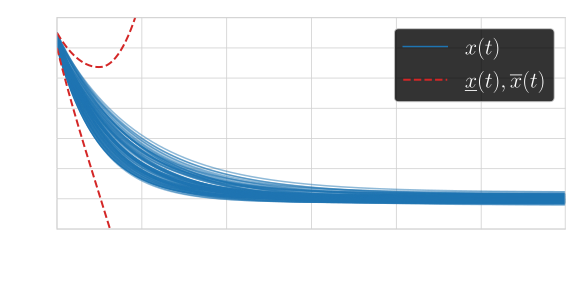
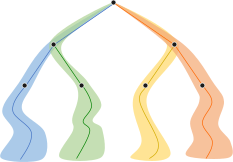
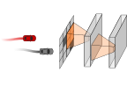
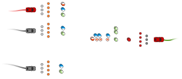
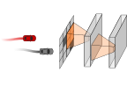
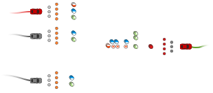
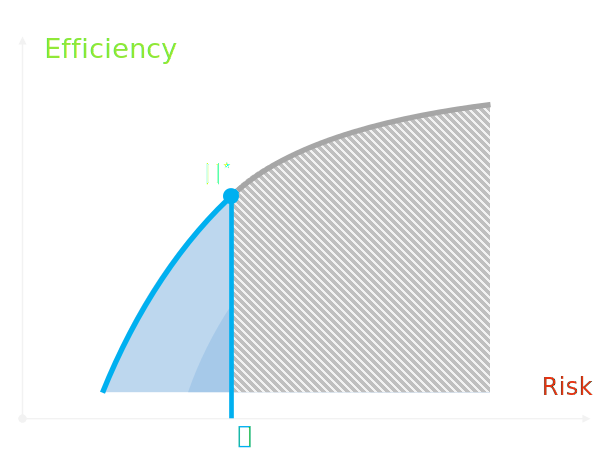
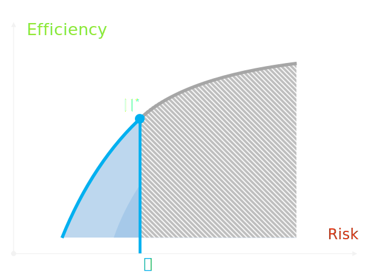
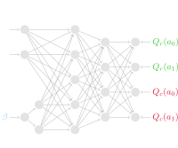

Safe and Efficient
Reinforcement Learning
for Behavioural Planning
in Autonomous Driving
Friday, October 30th, 2020
Introduction
Motivation
Failure modes
Insertion lane
Failure modes
Failure modes
Interacting with a human
- Under perfect perception & control,
- Human behaviours are unknown.
Research questions
- How to smoothly interact with other agents?
- Can we guarantee safety under uncertainty?
Benchmark: highway-env


Outline
- Model-based
- Model-free
Model-based
- Planning fast
Model-based
- Preparing for the Worst
Principle
$$\dot{x}(t) = \color{lightskyblue}{f}(\overset{state}{x(t)}, \overset{action}{u(t)}) + \overset{disturbance}{\omega(t)}$$
- 1. Learn a model of the dynamics
$\min_{\color{orange}{\theta}} \mathcal{L}(\color{orange}{f_{\theta}}, \color{lightskyblue}{f})$
-
We want $$\max_{\color{limegreen}{\pi}} \expectedvalue\left[ \sum_{t}\gamma^t \overset{reward}{R(x(t))}\middle| \color{lightskyblue}{f}, \color{limegreen}{\overset{policy}{\pi}} \right]$$
2. Use it to plan $$\max_{\color{limegreen}{\pi}} \expectedvalue\left[ \sum_{t}\gamma^t \overset{reward}{R(x(t))}\middle| \color{orange}{f_{\theta}}, \color{limegreen}{\overset{policy}{\pi}} \right]$$
Limitation
Ignores the model bias$$\color{orange}{f_{\theta}} \neq \color{lightskyblue}{f}$$
- But it might get better as $\color{orange}{f_{\theta}} \to \color{lightskyblue}{f}$ ?
- No: constrained optimization 
Constrained optimization
with oracle $\color{lightskyblue}{f}$
Model Bias
with model $\color{orange}{f_{\theta}}$
How to tackle model bias?
- Build a confidence region $\color{crimson}{\mathcal{C}_{N,\delta}}$ for the dynamics \[\mathbb{P}\left[\color{orange}{\theta}\in\color{crimson}{\mathcal{C}_{N,\delta}}\right]\geq 1-\delta\]
- Plan robustly against the worst case outcome \[\color{limegreen}{\sup_{u}} \underbrace{\color{crimson}{\inf_{\substack{\theta \in \mathcal{C}_{N,\delta}\\ \omega\in[\underline\omega,\overline\omega]}}} \expectedvalue \left[\sum_{n=0}^\infty \gamma^n R(x(t_n)) \middle| \color{limegreen}{u}, \color{crimson}{f_{\theta}}, \color{crimson}{\omega}\right]}_{\color{crimson}{V^r(u)}}\]
Confident regression
Assume $\color{orange}{f_\theta}$ is linearly parametrized
$\small \color{orange}{f_\theta}(x, u) = \phi_0(x, u) + \sum_{i=1}^d \color{orange}{\theta_i}\phi_i(x, u)\in\Real^p$
Proposition (Confidence ellipsoid $\color{crimson}{\cC_{N,\delta}}$ from Abbasi-Yadkori et al., 2011) \[\small \mathbb{P}\left[\|\color{orange}{\theta}-\color{crimson}{\theta_{N,\lambda}}\|_{\color{crimson}{G_{N,\lambda}}} \leq \color{crimson}{\beta_N(\delta)}\right]\geq 1-\delta\]
Robust planning
How to optimize the minimax objective? \[\color{limegreen}{\sup_{u}} {\color{crimson}{\inf_{\substack{\theta \in \mathcal{C}_{N,\delta}\\ \omega\in[\underline\omega,\overline\omega]}}} \expectedvalue \left[\sum_{n=0}^\infty \gamma^n R(x(t_n)) \middle| \color{limegreen}{u}, \color{crimson}{f_{\theta}}, \color{crimson}{\omega}\right]}\]
Related work
- Robust Dynamic Programming (Iyengar, 2005)
⮕ finite $\mathcal{S}$ - Linear Quadratic Setting ⮕ continuous $\mathcal{S}$
Linear Quadratic Systems
$f(x, u) = Ax + Bu$ $R(x, u) = -x^\top Qx - u^\top R u$
(Dean et al., 2018)
cast $\max$ $\min$ as an SDP
Obstacle avoidance tasks
Tree-based planning
- No assumption on dynamics $f$ or reward $R$
- Handle a single known dynamics
- Bound the set of reachable states under $\color{orange}{\theta\in\cC_{N,\delta}}$
Interval Prediction
Propagate uncertainty $\color{crimson}{\theta\in\cC_{N,\delta}}$ through time and bound the reachable states \[\color{lightskyblue}{\underline x(t)} \leq x(t) \leq \color{lightskyblue}{\overline x(t)}\]
Interval Prediction
Challenge
Propagate uncertainty from $x(t)$ to $x(t+dt)$
Assumption
$f$ depends linearly on $x$
$\dot{{x}}(t) = \color{orange}{A(\theta)}\color{\lightskyblue}{x(t)} + Bu(t) + D\omega(t),$
where $~\color{orange}{A(\theta)} = A_0 + \sum_{i=1}^d\color{orange}{\theta_i}\phi_i$
Solution 1: interval arithmetic
Lemma (Efimov et al., 2012)
Given $\color{crimson}{\underline{A}\leq A(\theta)\leq\overline{A}}$ and $\color{lightskyblue}{\underline{x}(t)\leq x(t)\leq \overline{x}(t)}$,
\[
\scriptsize
\begin{aligned}
\dot{\underline{x}}(t) = \color{crimson}{\underline{A}^{+}}\color{lightskyblue}{\underline{x}^{+}(t)} - \color{crimson}{\overline{A}^{+}}\color{lightskyblue}{\underline{x}^{-}(t)} - \color{crimson}{\underline{A}^{-}}\color{lightskyblue}{\overline{x}^{+}(t)} + \color{crimson}{\overline{A}^{-}}\color{lightskyblue}{\overline{x}^{-}(t)} +Bu(t) + D^{+}\underline{\omega}(t)-D^{-}\overline{\omega}(t),\\
\dot{\overline{x}}(t) = \color{crimson}{\overline{A}^{+}}\color{lightskyblue}{\overline{x}^{+}(t)} - \color{crimson}{\underline{A}^{+}}\color{lightskyblue}{\overline{x}^{-}(t)} - \color{crimson}{\overline{A}^{-}}\color{lightskyblue}{\underline{x}^{+}(t)} + \color{crimson}{\underline{A}^{-}}\color{lightskyblue}{\underline{x}^{-}(t)} +Bu(t) + D^{+}\overline{\omega}(t)-D^{-}\underline{\omega}(t),
\end{aligned}
\]
ensures the inclusion property.
But is it stable?
$\dot x(t) = -\color{orange}{\theta} x(t) + \omega(t), \quad\left\{\begin{array}{l} \small \color{orange}{\theta\in[1, 2]}\\ \small\omega(t) \in [-0.05, 0.05] \end{array}\right.$
Novel predictor
Under polytopic uncertainty around $A_0$ Metzler \[A(\theta) = \color{orange}{A_0} + \sum_i\alpha_i\color{crimson}{\Delta A_i},\]
Theorem (CDC 2019) The predictor \[ \scriptsize \begin{aligned} \dot{\underline{x}}(t) & = \color{orange}{A_{0}}\underline{x}(t)-\color{crimson}{\Delta A_{+}}\underline{x}^{-}(t)-\color{crimson}{\Delta A_{-}}\overline{x}^{+}(t) +Bu(t)+D^{+}\underline{\omega}(t)-D^{-}\overline{\omega}(t),\\ \dot{\overline{x}}(t) & = \color{orange}{A_{0}}\overline{x}(t)+\color{crimson}{\Delta A_{+}}\overline{x}^{+}(t)+\color{crimson}{\Delta A_{-}}\underline{x}^{-}(t) +Bu(t)+D^{+}\overline{\omega}(t)-D^{-}\underline{\omega}(t), \\ \end{aligned} \] ensures the inclusion property.
Novel predictor: stability
Theorem (CDC 2019) If there exist diagonal matrices $P$, $Q$, $Q_{+}$, $Q_{-}$, $Z_{+}$, $Z_{-}$, $\Psi_{+}$, $\Psi_{-}$, $\Psi$, $\Gamma\in\Real^{2n\times2n}$ such that \[ \begin{aligned} \color{lightskyblue}{\Upsilon\preceq0},\;P+\min\{Z_{+},Z_{-}\}>0,\;\Gamma>0,\\ Q+\min\{Q_{+},Q_{-}\}+2\min\{\Psi_{+},\Psi_{-}\}>0, \end{aligned} \] where \[ \color{lightskyblue}{\Upsilon_{11}}=\mathcal{A}^{\top}P+P\mathcal{A}+Q,\;\color{lightskyblue}{\Upsilon_{12}}=\mathcal{A}^{\top}Z_{+}+PR_{+}+\Psi_{+},\\ \color{lightskyblue}{\Upsilon_{13}}=\mathcal{A}^{\top}Z_{-}+PR_{-}+\Psi_{-},\;\color{lightskyblue}{\Upsilon_{22}}=Z_{+}R_{+}+R_{+}^{\top}Z_{+}+Q_{+},\\ \color{lightskyblue}{\Upsilon_{23}}=Z_{+}R_{-}+R_{+}^{\top}Z_{-}+\Psi,\;\color{lightskyblue}{\Upsilon_{33}}=Z_{-}R_{-}+R_{-}^{\top}Z_{-}+Q_{-} \] then the predictor is input-to-state stable with the disturbance $\underline{\omega}$, $\overline{\omega}$.
Novel predictor: stability
Prediction for a car

Scalability
Minimax control
Use the predicted intervals in a surrogate objective \[\small \color{orange}{\hat{V}^r(u)} = \sum_{n=N+1}^\infty \gamma^n \color{orange}{\min_{\color{lightskyblue}{\underline{x}(t_n)}\leq x \leq\color{lightskyblue}{\overline{x}(t_n)}} R(x)} \]
Results
$ \color{orange}{\underbrace{\hat{V}^r(u)}_{\substack{\text{surrogate}\\\text{value}}}} \leq \color{crimson}{\underbrace{{V}^r(u)}_{\substack{\text{robust}\\\text{value}}}}$ $\leq \color{limegreen}{\underbrace{{V}(u)}_{\substack{\text{true}\\\text{performance}}}}$
Bounded suboptimality
Theorem (NeurIPS 2020) Under two conditions:
- Lipschitz reward $R$;
- Stability condition: there exist $P>0,\,Q_0,\,\rho,\,N_0$ such that \[\forall \color{orange}{N}>N_0,\quad\begin{bmatrix} \color{orange}{A(\theta_N)}^\top P + P \color{orange}{A(\theta_N)} + Q_0 & P|D| \\ |D|^\top P & -\rho I_r \\ \end{bmatrix}< 0;\]
with probability $1-\delta$, \[ \underbrace{V(a_\star) - V(a_K)}_{\substack{\text{subptimality}}} \leq \color{crimson}{\underbrace{\Delta_\omega}_{\substack{\text{robustness to}\\ \text{disturbances}}}} + \color{lightskyblue}{\underbrace{\mathcal{O}\left(\frac{\beta_N(\delta)^2}{\lambda_{\min}(G_{N,\lambda})}\right)}_{\text{estimation error}}} + \color{limegreen}{\underbrace{\mathcal{O}\left(K^{-\frac{\log 1/\gamma}{\log \kappa}}\right)}_{\text{planning error}}} \]
Asymptotic Near-optimality
Corollary (NeurIPS 2020) Under an additional persistent excitation (PE) assumption: \[\exists \underline{\phi},\overline{\phi}>0: \forall n\geq n_0,\quad \underline{\phi}^2 \leq \lambda_{\min}(\Phi_{n}^\top\Sigma_{p}^{-1}\Phi_{n}) \leq \overline{\phi}^2,\] the stability condition 2. can be relaxed to the true system: $$\begin{bmatrix} \color{orange}{A(\theta)}^\top P + P \color{orange}{A(\theta)} + Q_0 & P|D| \\ |D|^\top P & -\rho I_r \\ \end{bmatrix}< 0;$$ and the bound takes the more explicit form
${V(a_\star)} - {V(a_K)} \leq \color{crimson}{\Delta_\omega} +$ $\color{lightskyblue}{{\mathcal{O}\left(\frac{\log\left(N^{d/2}/\delta\right)}{N}\right)}}$$ + $ $\color{limegreen}{{\mathcal{O}\left(K^{-\frac{\log 1/\gamma}{\log \kappa}}\right)}}$
Experiment: obstacle avoidance
Experiment: obstacle avoidance
Experiment: obstacle avoidance
Results
| Performance | failures | min | avg $\pm$ std |
|---|---|---|---|
| Oracle | $0\%$ | $11.6$ | $14.2 \pm 1.3$ |
| Nominal | $4\%$ | $2.8$ | $13.8 \pm 2.0$ |
| DQN (trained) | $6\%$ | $1.7$ | $12.3 \pm 2.5$ |
| Robust | $0\%$ | $10.4$ | $13.0 \pm 1.5$ |
What if our assumptions are wrong?
$$\dot{{x}}(t) = \left(\color{magenta}{A_0} + \sum_{i=1}^d{\theta_i}\color{magenta}{\phi_i}\right)x(t) + Bu(t) + D\omega(t)$$
Our statistical framework can test the adequacy of the model $\color{magenta}{(A_0,\phi)}$ with observations $x(t_0)$, $x(t_1),\dots$
Multi-model extension
Use multiple models $\color{magenta}{(A_0^{(i)},\phi^{(i)})}$
- Maintain the set of valid models
- Propagate all trajectory intervals
- Evaluate the worst-case outcome
Experiment: intersection (1/5)
Experiment: intersection (1/5)
Experiment: intersection (2/5)
Experiment: intersection (3/5)
Experiment: intersection (4/5)
Experiment: intersection (5/5)
Results
| Performance | failures | min | avg $\pm$ std |
|---|---|---|---|
| Oracle | $0\%$ | $6.9$ | $7.4 \pm 0.5$ |
| Nominal 1 | $4\%$ | $5.2$ | $7.3 \pm 1.5$ |
| Nominal 2 | $33\%$ | $3.5$ | $6.4 \pm 0.3$ |
| DQN (trained) | $3\%$ | $5.4$ | $6.3 \pm 0.6$ |
| Robust | $0\%$ | $6.8$ | $7.1 \pm 0.3$ |
Limitation of the robust approach
Limitation of the robust approach
Contradictory objectives
Q-learning
\[Q(s,a) = \max_\pi \displaystyle\expectedvalue_{\pi}\left[\sum_{t=0}^\infty \gamma^t R(s_t, a_t) \middle| \substack{s_0=s\\a_0=a}\right]\]
- Fixed point of the Bellman operator $$\mathcal{T}:Q\rightarrow R + \gamma \expectedvalue_P [\max_a Q]$$
- Fixed-point iteration guaranteed to converge, provided sufficient coverage
Function approximation
💡 Fit a parametrized model $Q_\theta$
What is a good class of functions for behavioural planning?
Requirements:
- Represent any number of vehicles
- Invariance to permutations
- Low-dimensional input
Neural Architectures
 



| MLP | CNN | Social attention | |
|---|---|---|---|
| Variable input | ❌ | ✔️ | ✔️ |
| Order invariant | ❌ | ✔️ | ✔️ |
| Low-dimensional | ✔️ | ❌ | ✔️ |
Results
Visualization of attention scores
Sensitivity to distance
Sensitivity to uncertainty
Model-free
- Acting under Adjustable Constraints
Controlling the tradeoff
 

Budgeted Markov Decision Process
- Dynamics $P$,
- Rewards $R$,
- Costs $C$,
- Budget $\beta$,
Objective
$\text{subject to }\,\expectedvalue_\pi\,\color{crimson}{\sum_t\gamma^t C_t} \leq \color{lightskyblue}{\beta}$ $\text{subject to }\,\color{crimson}{V_c^\pi}(s,\color{lightskyblue}{\beta})\leq \color{lightskyblue}{\beta}$
Budgeted policies
$\overline{Q}^\pi(s, a, $$\color{lightskyblue}{\underbrace{\beta}_{\substack{\text{risk}\\\text{budget}}}}$$) = ($$\color{limegreen}{\underbrace{Q_r^\pi}_{\substack{\text{expected}\\\text{reward}}}}$$,$$\color{crimson}{\underbrace{Q_c^\pi}_{\substack{\text{expected}\\\text{cost}}}}$$)$
Budgeted Optimality
Theorem (NeurIPS 2019) The optimal state-action value function verifies \[\color{lightskyblue}{\overline{Q}^\star}(\overline{s},\overline{a}) = \underbrace{\overline{R}(\overline{s}, \overline{a}) + \gamma \sum_{\overline{s}\in\overline{\mathcal{S}}}\overline{P}\left(\overline{s}'\middle| \overline{s},\overline{a}\right) \sum_{\overline{a}\in\overline{\mathcal{A}}} \color{orange}{\pi_{\text{g}}\left(\overline{a}'\middle| \overline{s}';\;\color{lightskyblue}{\overline{Q}^\star}\right)}\color{lightskyblue}{\overline{Q}^\star}(\overline{s}',\overline{a}')}_{\mathcal{T}\color{lightskyblue}{\overline{Q}^\star}(\overline{s},\overline{a})} \] where the greedy policy $\color{orange}{\pi_\text{g}}$ is \[ \begin{aligned} \color{orange}{\pi_\text{g}(\overline{a}|\overline{s}; Q)} \in &\mathop{\text{arg}\min}_{\rho\in\Pi_r^Q} \expectedvalue_{\overline{a}\sim\rho}Q_c(\overline{s}, \overline{a}), \\ \text{and }\quad \Pi_r^Q = &\mathop{\color{limegreen}{\text{arg}\max}}_{\rho\in\mathcal{M}(\overline{\mathcal{A}})} \expectedvalue_{\overline{a}\sim\rho} \color{limegreen}{Q_r(\overline{s}, \overline{a})} \\ & \text{ s.t. } \expectedvalue_{\overline{a}\sim\rho} \color{crimson}{Q_c(\overline{s}, \overline{a})} \color{lightskyblue}{\leq \beta} \end{aligned} \]
The optimal policy
Proposition (NeurIPS 2019)
- $\color{orange}{\pi_\text{g}(\cdot\,; \overline{Q}^\star)}$ is optimal.
- $\color{orange}{\pi_\text{g}(\cdot\,; \overline{Q})}$ can be computed efficiently as a mixture $\color{limegreen}{\pi_{\text{hull}}}$ of two points on the convex hull of $\overline{Q}$.
How to compute $\overline{Q}^\star$?
- We have $\color{lightskyblue}{\overline{Q}^\star} = \mathcal{T}\color{lightskyblue}{\overline{Q}^\star}$
- Apply $Q_{k+1}\gets\mathcal{T}Q_k$
- We cannot guarantee convergence of $Q_k$
Theorem (NeurIPS 2019) For any BMDP with $|\mathcal{A}|\geq 2$, $\mathcal{T}$ is not a contraction.
How to compute $\overline{Q}^\star$?
Theorem (NeurIPS 2019) $\mathcal{T}$ is a contraction on the subset \[\{\overline{Q}: ``\color{limegreen}{Q_r} \text{ is L-Lipschitz with respect to } \color{crimson}{Q_c}"\}\] with $L<1/\gamma - 1$.
- We guarantee convergence under (strong) assumptions
- We observe empirical convergence
Results
Two-way road
Conclusion
Safe Decision-making among interacting drivers with behavioural uncertainty
- Model-based
- Build a confidence region around the true model
- Propagate a stable interval predictor
- Optimise with a pessimistic surrogate
- Test the adequacy of multiple models
- Model-free
- Use self-attention for social interactions
- Constrain the expected risk below a budget
Model-free